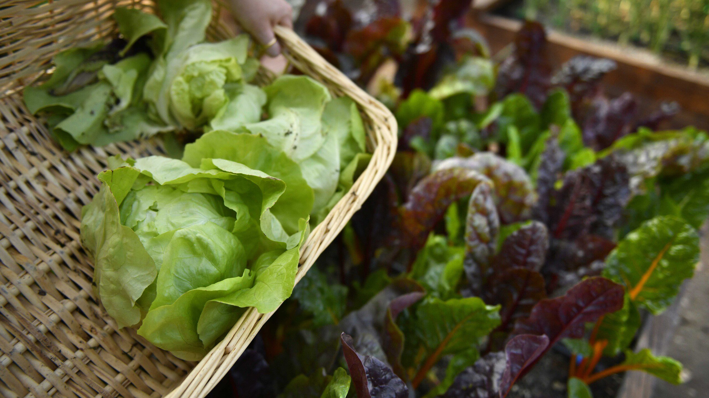
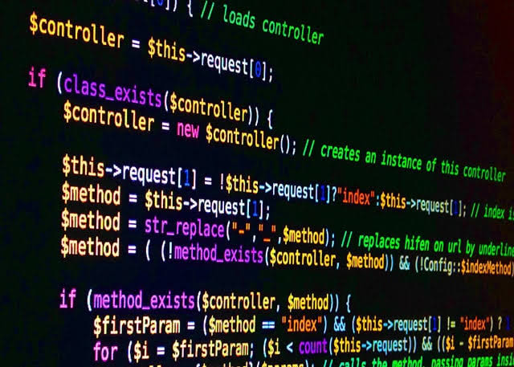

Fotografía urbana
Conoce las nuevas actividades y registros fotográficos que muestran distintos espacios y expresiones de nuestra comunidad.
Leer más sobre fotografía urbanaConoce las nuevas actividades y registros fotográficos que muestran distintos espacios y expresiones de nuestra comunidad.
Leer más sobre fotografía urbana
Vecinos y vecinas participan en un espacio comunitario dedicado al cultivo y al cuidado del medioambiente.
Conocer el huerto comunitario
Actividad de programación orientada a personas que desean comenzar a desarrollar sus primeras habilidades tecnológicas.
Conocer la actividad de programación